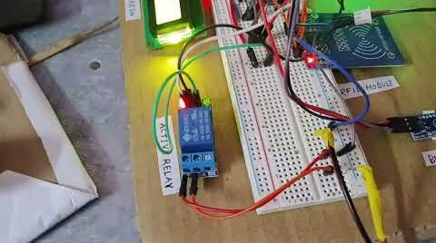

Home Security System
- Arduino Nano-based, multi-module home security system.
- Built RFID-based authorization using an MFRC522 module over SPI.
- Displayed real-time system status on an LCD1602 screen over I²C, with a buzzer alert for intrusions.
- Implemented a relay-driven solenoid door lock, laser tripwire window security, and flame-sensor fire safety with emergency door release.
